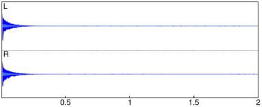

21.2.5 Convolution of two signals or functions
The convolution of two real vectors
v=[v1,…,vn] and w=[w1,…,wm] is the complex vector
z=v∗ w (note the difference between ∗ and the cross-correlation operation ⋆,
see Section 21.2.3) of length n+m−1 given by
such that vj=0 for j≥ n and wj=0 for j≥ m.
The convolution of two real functions f(x) and g(x) is the
integral
The convolution
command finds the convolution of two vectors or two functions.
-
For the convolution of two vectors,
convolution takes two arguments:
v,w, two vectors (not necessarily the same length).
- convolution(v,w) returns the convolution v∗ w.
- For the convolution of two functions,
convolution takes two mandatory arguments and one
optional argument:
-
f,g, two expressions of a variable.
- Optionally, x, the variable name.
- convolution(f,g ⟨,x⟩) returns the
convolution of f and g restricted to [0,+∞⟩.
Remark.
f and g are assumed to be causal functions, i.e. f(x)=g(x)=0
for x<0. Therefore both f and g are multiplied with θ(x) prior to integration.
Examples
To find the convolution of two lists [1,2,3] and [1,−1,1,−1], enter:
| convolution([1,2,3],[1,-1,1,-1]) |
|
| |
| ⎡
⎣ | 1.0,1.0,2.0,−2.0,1.0,−3.0 | ⎤
⎦ |
| | | | | | | | | | |
|
Compute the convolution of f(x)=25 e2 x θ(x) and
g(x)=x e−3 x θ(x), where θ is the Heaviside function:
| convolution(25*exp(2x),x*exp(-3x)) |
|
| |
| ⎛
⎝ | −5 x e−3 x−e−3 x+e2 x | ⎞
⎠ | θ | ⎛
⎝ | x | ⎞
⎠ |
| | | | | | | | | | |
|
Compute the convolution of f(t)=ln(1+t) θ(t) and
g(t)=1/√t.
| convolution(ln(1+t),1/sqrt(t),t) |
|
| |
− | | θ | ⎛
⎝ | t | ⎞
⎠ | ⎛
⎜
⎜
⎜
⎜
⎝ | 2 t ln | ⎛
⎜
⎜
⎜
⎜
⎝ | | ⎞
⎟
⎟
⎟
⎟
⎠ | +4 | √ | | | √ | | +2 ln | ⎛
⎜
⎜
⎜
⎜
⎝ | | ⎞
⎟
⎟
⎟
⎟
⎠ | ⎞
⎟
⎟
⎟
⎟
⎠ |
|
|
|
|
| | | | | | | | | | |
|
Application
A “dry” signal can be reverberated by convolving it with the
impulse response of a particular acoustic space.
The latter is typically obtained by recording a short, popping sound at
the location, such as firing a starter gun.
The following demonstration requires two files:
a music mono recording msmn4.wav downloaded from
here
and a two-channel impulse response French 18th Century Salon.wav
downloaded from here.
To load the files in Xcas, enter:
| clip:=readwav("/home/luka/Downloads/msmn4.wav") |
|
| |
a sound clip with 110250 samples at 22050 Hz (16 bit, mono)
| | | | | | | | | | |
|
| ir:=readwav("/home/luka/Downloads/French 18th Century Salon.wav") |
|
| |
a sound clip with 88300 samples at 44100 Hz (16 bit, stereo)
| | | | | | | | | | |
|

Convolving data from clip with both channels in
ir produces a reverberated variant of the recording, in
stereo. Since the two clips have different sample rates,
clip should be up-sampled to 44100 Hz before convolving
(see Section 28.2.11).
| data:=channel_data(resample(clip,samplerate(ir))):;
L:=convolution(data,channel_data(ir,left)):;
R:=convolution(data,channel_data(ir,right)):; |
Evaluation time: 35.87
The convolved signals L and R now become the left
and right channel of a new audio clip, respectively. The
normalize option is used because convolution usually results
in a huge increase of sample values.
| spatial:=createwav([L,R],normalize=-3):; playsnd(spatial) |
The music being played back appears as it has been recorded in the same
salon as the impulse response. Moreover, it is a true stereo sound at
44100 Hz as opposed to the original mono recording at 22050 Hz.
To visualize it, enter:
The length of the resulting audio equals the length of the original clip
plus the length of the impulse response minus 1. Indeed:
| length(spatial)==length(data)+length(ir)-1 |